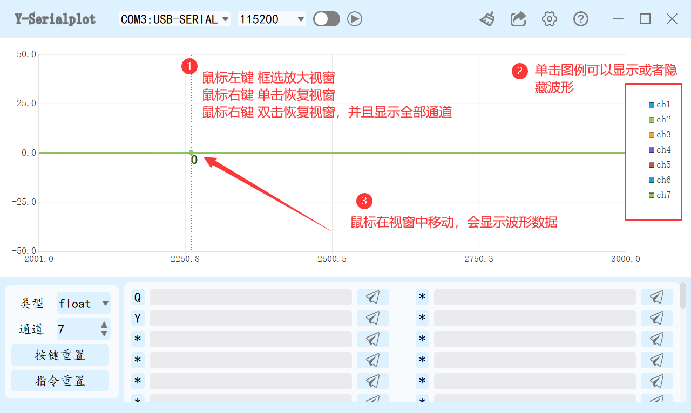
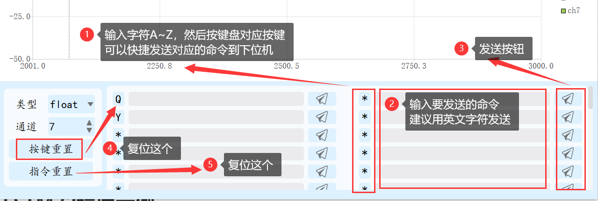
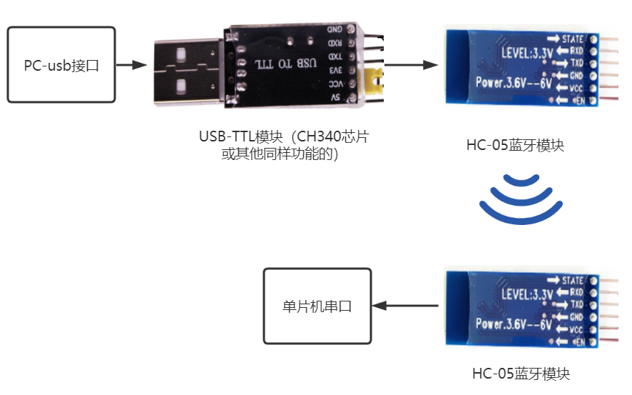
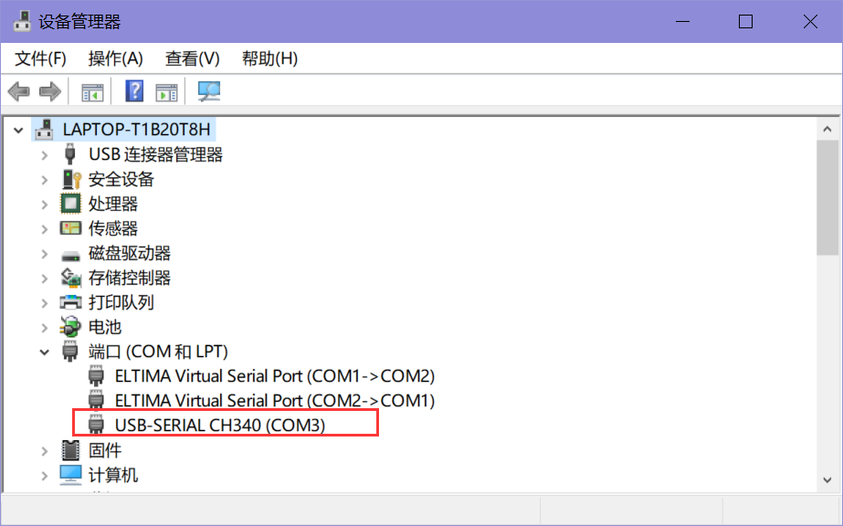
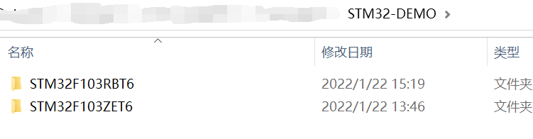
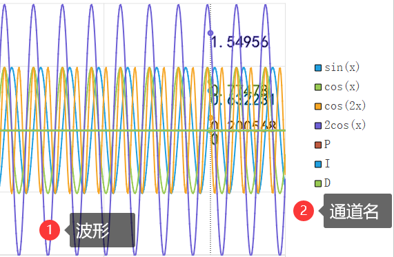
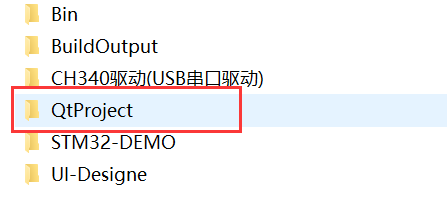

y-serialplot使用说明
这款软件可以将串口接受到的数据以波形的方式显示，方便查看数据和调试参数。在电赛等一些场合用来调试PID参数非常方便。
在刚开始参加比赛的时候做无人机，全靠肉眼调参，然后一遍又一遍的修改参数，编译程序，下载程序。效率低而且慢。后来了解到有软件示波器，用过匿名的，用过山外调试助手，但是他们看波形还行，在线修改参数不方便。后来又了解到一个叫做serialplot的软件，非常好用，但是发送参数还是感觉不合适。所以就想着自己开发一款软件用来调参。
这款软件UI清新，通信协议简单，发送命令、波形名称显示等更多考虑到舒适性的问题。但是因为波形显示窗口使用的是Qt自带的QChart控件，所以在大量数据（5万个点左右）时有掉帧的现象。
开发环境
- QT5.9.8
项目开源仓库链接
仓库文件介绍
1 软件页面说明
标题栏

视窗区域

- 命令发送区域

命令的发送有：按对应的快捷键，鼠标点击发送按钮，输入指令后按下回车键，这三种发送方式。使用起来更加方便。
2 如何连接下位机
- 有线连接

无线连接

单片机的串口能够被电脑识别，必须要有USB-TTL转接模块才行。因为一般单片机的串口为TTL电平信号，和USB接口的电平信号不兼容，因此需要特殊的芯片进行转接。常用的芯片有CH340和CP2102。
然后使用USB-TTL模块需要根据芯片信号，安装驱动。
驱动安装好了之后，应该能够在电脑的设备管理器中看到该串口设备。（下图中的芯片为CH340芯片）

这里提供了CH340的驱动，一起放在软件目录下了。
如果安装失败，可以尝试先点击卸载，然后再点击安装。

3 通信协议说明
正确连接设备之后，需要在设备中按照本节通信协议编写波形发送程序，本软件才能显示数据波形。
3.1 下位机向软件发送波形的协议
为了能够自动适应波形通道的名称，通信协议分为两段。

注意：软件和STM32使用的均是小端模式。
第一段：name字段
帧头 ch1的名称 分隔符 ch2的名称 分隔符 chn的名称 帧尾 字符 AABBCC name1 , name2 , ... CCBBAA 备注 任意长度的字符串，不能中文 英文逗号 任意长度的字符串，不能中文 英文逗号 .... 例：AABBCCch1,ch2,ch3CCBBAA
第二段：数据字段
帧头 ch1的数据 ch2的数据 chn的数据 帧尾 字符 DDEEFF 123 123 ... FFEEDD 备注 数据类型为上位机设置的类型 所有通道数据类型一致 所有通道数据类型一致
例：DDEEFF12asdfas#@#$345678FFEEEDD
中间一段莫名其妙的字符，应该可以在第4节的发送函数中得到答案。
3.2 上位机向下位机发送指令的协议
这个协议根据下位机的解析程序确定，可以自己决定发送什么，只要自己能够正确解析就行。
这里说明提供的STM32示例程序中使用的通信协议。
控制字段 分隔符 数据1 分隔符 数据2 分隔符 数据3 结束控制符 字符 3个char = 1个float 英文 , 1个float 英文 , 1个float #
例：PID=10.21,21.21,13.31#
直接输入浮点数就行，下位机中使用C语言的标准库进行格式化。
4 STM32示例程序
在软件包中提供了STM32F103的示例工程。默认使用本软件的同学有STM32或者单片机开发基础。所以就不介绍工程结构和串口初始化部分的程序。没有基础的同学可以可以自行学习一下。
下面主要介绍波形发送、命令接受的程序。

4.1 波形发送
例程中使用的是 STM32 的串口1进行数据收发。
- 波形发送业务代码
xxxxxxxxxx341void send_wave(void)2{3 //定义通道名帧头帧尾4 u8 frameNameHead[] = "AABBCC";5 u8 frameNameEnd[] = "CCBBAA";6 7 //定义数据帧头帧尾8 u8 frameDataHead[] = "DDEEFF";9 u8 frameDataEnd[] = "FFEEDD";10 11 //定义通道名12 u8 name[] = {"sin(x),cos(x),cos(2x),2cos(x),P,I,D"};13 14 //赋值数据15 float channels[7];16 channels[0] = datas[0];17 channels[1] = datas[1];18 channels[2] = datas[2];19 channels[3] = datas[3];20 channels[4] = cmd_P;21 channels[5] = cmd_I;22 channels[6] = cmd_D;23 24 25 //通过串口1，向上位机发送数据26 usart_senddatas(USART1,frameNameHead,sizeof(frameNameHead)-1);27 usart_senddatas(USART1,name,sizeof(name)-1);28 usart_senddatas(USART1,frameNameEnd,sizeof(frameNameEnd)-1);29 30 usart_senddatas(USART1,frameDataHead,sizeof(frameDataHead)-1);31 usart_senddatas(USART1,(u8*)channels,sizeof(channels));32 usart_senddatas(USART1,frameDataEnd,sizeof(frameDataEnd)-1);33 34}12行的通道名称，是一个字符串，不同通道之间以 英文逗号, 间隔，上位机中设置了多少个通道就写多少个名字。
15行定义了发送的数据数组，数组类型需要和上位机中设置的类型一样一致。数组成员数量需要和上位机中设置的通道数量一致。
16~19行对数组赋值。数据是 getdatas() 函数生成的三角函数。
20~22行对数组赋值。数据是 get_cmd() 函数获取的上位机设置的PID数值。
26~32行使用串口1，通过数据指针将数据发出。usart_senddatas（） 函数是自己是自己实现的串口多字节发送函数。
- 波形发送驱动
xxxxxxxxxx91void usart_senddatas(USART_TypeDef* USARTx,u8* addr,int size)2{3 while(size--) //判断数据发送完没有4 {5 while(USART_GetFlagStatus(USARTx,USART_FLAG_TC) == RESET);//等待上一个byte的数据发送结束。6 USART_SendData(USARTx,*addr);//调用STM32标准库函数发送数据7 addr++; //地址偏移8 }9}4.2 接受代码
- 接收驱动（串口中断函数）
- 这个函数不需要我们调用它，它会在单片机串口每接收到1Byte数据时自动调用。比如发了发送一个 hello 字符，单片机就会自动调用5次这个函数。
- 接受到的字符会存在
usart_readbuff数组中，当接收到#时，会停止将数据保存到数组，并且置位usart_readok，直到我们处理了这一帧数据。 - 使用这种方法会让程序有层次性，但是会出现数据阻塞（必须要处理了上一帧数据才会接收下一帧数据）。
xxxxxxxxxx241char usart_readbuff[30] = {0}; //串口接受缓存数组2u8 usart_readok = 0; //一帧数据处理标志3void USART1_IRQHandler(void) //串口1中断服务程序4{5 u8 temp;6 static u8 count = 0; // 接收数组控制变量7 if(USART_GetITStatus(USART1, USART_IT_RXNE) != RESET) //判断是否为接收中断8 {9 temp = USART_ReceiveData(USART1); //读取接收到的数据,并清除中断标志10 if(temp == '#' && usart_readok == 0) 11 {12 usart_readbuff[count] = '#';13 usart_readok = 1;14 count = 0;15 }16 else if(usart_readok==0)17 {18 usart_readbuff[count] = temp; //保存接收到的数据到接收缓存数组19 count++; //数组下标切换20 if(count >= 30) // 防止数据越界21 count = 0;22 }23 }24}- 解析函数
- 关于
sscanf()和memset()函数大家自行了解。 - 第6行的
"%3s=%f,%f,%f#"字符格式化，和第3.2节的接受函数对应。
xxxxxxxxxx161u8 usart_get_data(char *cmd,float *d1,float *d2,float *d3)2{3 u8 flag = 0;4 if(usart_readok == 1)5 {6 if(sscanf(usart_readbuff,"%3s=%f,%f,%f#",7 cmd,d1,d2,d3)==4)8 {9 flag = 1;10 }11 //清除接收完成标志12 memset(usart_readbuff,0,sizeof(usart_readbuff));13 usart_readok = 0;14 }15 return flag;16}- 接收的业务代码
xxxxxxxxxx151void get_cmd(void)2{3 char u_buff[10];4 float u_d1,u_d2,u_d3;5 if(usart_get_data(u_buff,&u_d1,&u_d2,&u_d3))6 {7 if(strcmp(u_buff,"PID") == 0) //比较命令控制字符是否为PID8 {9 cmd_P = u_d1;10 cmd_I = u_d2;11 cmd_D = u_d3;12 }13 }14 memset(u_buff,0,sizeof(u_buff));15}4.3 波形生成函数
- 这个函数只是为了在这个示例程序中产生一个波形给大家看。实际使用时用需要观察的数据即可。
xxxxxxxxxx101void getdatas(void)2{3 static float x = 0.00f * PI;4 datas[0] = sinf(x);5 datas[1] = cosf(x);6 datas[2] = cosf(2 * x);7 datas[3] = 2 * cosf(x);8 9 x += 0.05f * PI;10}4.4 演示效果
- 第一步设备连接电脑
- 第二步确定是安装了驱动的
- 第三步确定STM32示例程序在设备中运行了
然后：


就可以看到：

然后在命令窗口输入PID设置命令并发送，就可以看到后三个通道的数据变化了

5 如何二次开发
需要二次开发请在文章开头，贴的开源仓库连接中拉取项目。
- 开发环境为 QT5.9.8 + QT Creator
- 编译链为 MSVC2017 （因为帮助页面使用了QT的浏览器控件，所以不能用MinGW编译链）
- 项目是在Windows 10系统中开发的。
拉取项目后在下图框选的文件夹中使用 QT Creator 打开.pro文件即可进行二次开发。
